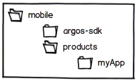
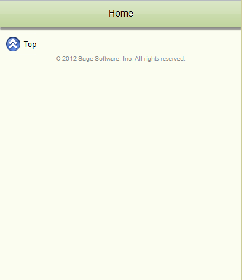
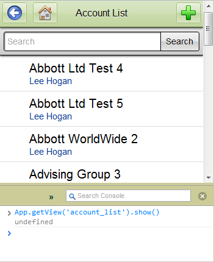
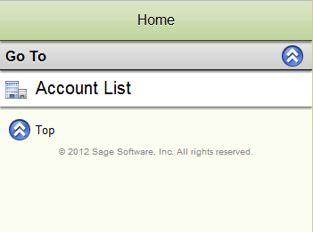
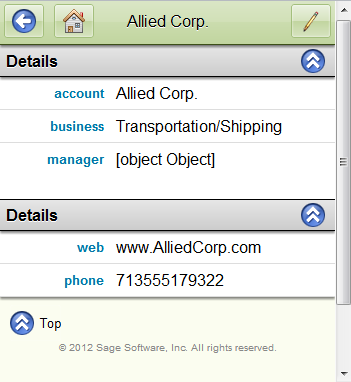
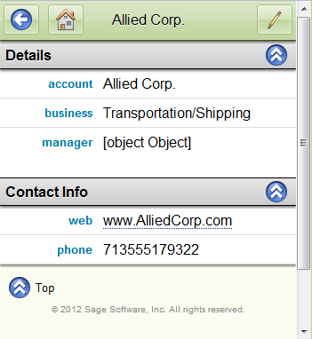
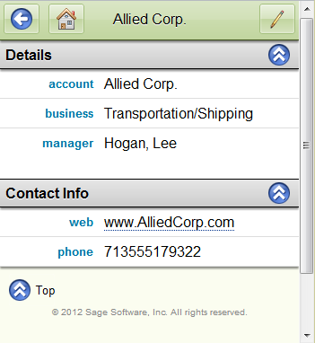
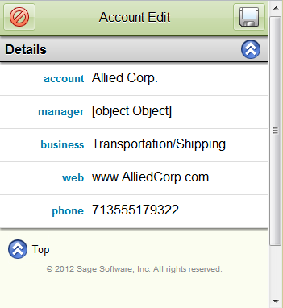
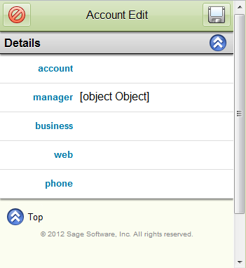

By the end of this guide you will have an enterprise data-driven mobile application with the following:
- A Home Navigation page;
- Two List, or Collection, Views bound to different entities;
- A Detail View showing in depth properties, a single quick action and a link to a related List View; and
- A dual-purpose Edit View used to create and update entities.
As you are following along the guide will cover topics such as: Configuring SData, AMD loading and Simplates. From start to finish the guide should take around 15-20 minutes to complete and there are many more advanced topics to address specific implementations.
Setup
The Argos framework is meant to serve in an environment of multiple on-going applications and their modules, as such the folder structure allows a single copy of Argos-SDK. You may opt for a different structure but the following provides an extensible foundation.
1. Create a folder called mobile and within that, create a folder called argos-sdk and a folder called products.
2. You should now have \mobile, \mobile\argos-sdk and \mobile\products.

3. All applications will be a new folder within products.
4. Download the latest version of the SDK and extract the zip into the argos-sdk folder: https://github.com/Saleslogix/argos-sdk
5. A bare-bones app that this guide will use as a kickstarter has been created as Argos-Template. Download it from GitHub: https://github.com/Saleslogix/argos-template/zipball/master
6. Create a new folder under products named argos-template and place the extracted contents there.
7. Within the argos-template folder open index-dev.html.

Congratulations you have your first Argos app!
If you want to know about all the files you downloaded, see Overview - for an explanation of all files and
folders currently in argos-template.
Local Files
Running index-dev.html off the local file system may not always work as files loaded in this way is treated as a security concern in
certain browsers. You should setup a local server (ISS, WAMP, XAMPP, etc) and run from localhost.
Cache
Be aware that modern browsers cache things heavily and you should make sure that when opening or refreshing your app it is always the latest code. Many use "private" browsing features to disable cookies and cache. If using a local server make sure it is also set to not cache any files.
Configuring an SData Connection
SData is the lifeblood of Argos-SDK, all data input and output are bound to the protocol and the base List, Detail and Edit Views process and construct the data bound calls in SData format.
To set up the service that all calls will use we will point to a public provider with sample data and test user.
1. Open argos-template/configuration/development.js
define('configuration/development', ['Mobile/Template/ApplicationModule'], function(ApplicationModule) {
return {
modules: [
new ApplicationModule()
],
connections: {
'crm': {
isDefault: true,
offline: true,
url: '',
json: true
}
}
};
});
2. The configuration should return an object containing the connections key. That is where all SData connections will be defined.
3. Within the connections object, each key will define a service. Currently there is a crm service with an empty url, edit it to
point to our sample provider:
http://50.16.242.109/sdata/slx/dynamic/-/
4. Now add two new keys: username and password and set them to 'lee' and '' (blank) respectively:
connections: {
'crm': {
isDefault: true,
offline: true,
userName: 'lee',
password: '',
url: 'http://50.16.242.109/sdata/slx/dynamic/-/',
json: true
}
}
5. SData is fully configured and we are now ready to start creating views that retrieve data.
Create a Simple List View
List Views
List Views are all about presenting large amounts of data in an easy to read list format. Generally each list item will take you to a Detail View for that item.
When making any new Views you need to do two things:
1. Code the view; and
2. Register the view in ApplicationModule.js.
Step 1: Coding a List View
List Views are designed to display a collection or list of a single entity. Some examples include: employees, artists, bug reports or sales orders.
For our entity choice we will be making a List (and Detail, Edit) View of the entity "Account" which uses the SData endpoint "accounts".
1. Create a new folder in argos-template\src\Views named "Account".
2. Create an empty file named List.js into argos-template\src\Views\Account\ and open it up.
3. First we setup the declare and define according the AMD standard. For more information see Appendix: AMD.
define('Mobile/Template/Views/Account/List', [
'dojo/_base/declare',
'dojo/string',
'argos/List'
], function(
declare,
string,
List
) {
return declare('Mobile.Template.Views.Account.List', [List], {
});
});
4. All views have a titleText and id property so let's define those first. The id standard for list is "entity_list" - so ours is account_list.
return declare('Mobile.Template.Views.Account.List', [List], {
// Localization
titleText: 'Account List',
// View Properties
id: 'account_list'
});
5. Add the icon property and it set to 'content/images/icons/Company_24.png'. The icon will be used by our Home View.
return declare('Mobile.Template.Views.Account.List', [List], {
// Localization
titleText: 'Account List',
// View Properties
id: 'account_list',
icon: 'content/images/icons/Company_24.png'
});
6. Now for the data. The List view was several properties that control what data is retrieved: resourceKind, querySelect and queryOrderBy.
-
resourceKind to
'accounts'. Entity/endpoint name. -
querySelect to an array of strings for:
AccountName,AccountManager/UserInfo/UserName. Fields of the entity that will be returned. -
queryOrderBy to
'AccountName asc'. Server-side ordering.return declare('Mobile.Template.Views.Account.List', [List], { // Localization titleText: 'Account List', // View Properties id: 'account_list', icon: 'content/images/icons/Company_24.png', resourceKind: 'accounts', querySelect: [ 'AccountName', 'AccountManager/UserInfo/Username' ], queryOrderBy: 'AccountName asc' });
7. Every row is constructed by a List Views itemTemplate property. All templates use Simplate, which is a templating engine where
the item entry and the list view is passed as variables: $ and $$. See Simplate for more information on the template engine.
8. Add the following itemTemplate to your view:
// Templates
itemTemplate: new Simplate([
'<p class="listview-heading">{%: $.AccountName %}</p>',
'<p class="micro-text">{%: $.AccountManager && $.AccountManager.UserInfo ? $.AccountManager.UserInfo.UserName : "" %}</p>'
])
11. Save your List view file, before it will be loaded in the app we need to register it in ApplicationModule.
###Step 2: Register the View Before any view or module is loaded into the application (via AMD) it needs to be:
- added as a dependency;
- verify the reference is passed in; and
- registered via the
ApplicationModule.registerView()function.
1. Open argos-template/src/ApplicationModule.js and edit the define function to pull in our new List view:
define('Mobile/Template/ApplicationModule', [
/* trimmed for example */
'Mobile/Template/Views/Account/List',
], function(
/* trimmed for example */
AccountList
) {
2. Go to the loadViews() function, as you can see it is already registering the Home page. Following the same setup go ahead and
register your list view using the referenced variable:
this.registerView(new AccountList());
3. Save the file.
Your view is now defined and registered and will be created, initialized and added to the DOM when your application starts.
###Step 3: Quick Peek
If you open index-dev.html right now you will see the blank Home view and no way to get to the List view. However, we can take a
quick peek and directly go to the view - this trick is useful for developing and debugging views.
1. Open index-dev.html.
2. Open your javascript console. See Browsers Help for the shortcut key for your chosen browser.
3. Type in: App.getView('account_list').show()
4. Press enter.

Without going into too much detail the App namespace is glue that holds everything together and the line above is used to show any view.
Features seen in the Quick Peek:
- View transition effect (slide) into place;
- Title bar with Back, Home and Add buttons;
- Search widget;
- Automatic paging (scroll down in the list to see Retrieve More);
- Navigation context and history (note the URL);
- Offline cache (inspect your local storage);
- Footer bar with Top and Copyright text; and
- Retrieved and rendered out 20 accounts.
The above is the default behavior - every piece is customizable so that you can tailor it to your business needs.
Adding a List View to the Home Page
With a List view defined lets add a link to it on the Home page.
1. Open argos-template/src/Application.js and find the the getDefaultViews function. This function returns a list of view ids that
should be on the Home screen by default. Add your new view id to the list:
getDefaultViews: function() {
return [
'account_list'
];
},
2. Save and open argos-template/index-dev.html.

The icon displayed came from the icon property defined on the list view.
Clicking the row will take you to your Account List view where it will automatically construct an SData request, parse and present the
results using itemTemplate and use a simple paging mechanism.
Create a Simple Detail View
Detail Views are intended to display a wealth of knowledge all categorically organized with helpful actions and links to perform on this entry or take you to ones related.
Creating a Detail View is very similar to creating a List in that you need to do three things:
1. Code the Detail View;
2. Register the view; and
3. Wire the List View to the Detail View.
Step 1: Coding a Detail View
1. Create an empty file named Detail.js into argos-template\src\Views\Account\ and open it up.
2. First we setup the declare and define according the AMD standard. For more information see Appendix: AMD.
define('Mobile/Template/Views/Account/Detail', [
'dojo/_base/declare',
'dojo/string',
'argos/Detail'
], function(
declare,
string,
Detail
) {
return declare('Mobile.Template.Views.Account.Detail', [Detail], {
});
});
3. All views have a titleText and id property so let's define those first. The id standard for detail is "entity_detail" making this one account_detail.
return declare('Mobile.Template.Views.Account.Detail', [Detail], {
// Localization
titleText: 'Account Detail',
// View Properties
id: 'account_detail'
});
4. Now for the data. The two detail view properties we need are: resourceKind and querySelect. The resource kind is the endpoint of our entity and querySelect tells the request what fields we need.
-
resourceKind to
'accounts' -
querySelect to an array of strings for:
AccountName,AccountManager/UserInfo/*,WebAddress,MainPhone, andIndustryreturn declare('Mobile.Template.Views.Account.Detail', [Detail], { // Localization titleText: 'Account Detail', // View Properties id: 'account_detail', resourceKind: 'accounts', querySelect: [ 'AccountName', 'AccountManager/UserInfo/*', 'WebAddress', 'MainPhone', 'Industry' ] });
5. All Detail views must define a createLayout() function that defines the view layout property. The property layout is an array
of "section" objects. Each section has a property named "children" which in turn is an array of "row" objects.
The sections get turned into collapsible headers with the children being the rows of information under that header.
// section example
{
title: 'Section Header',
name: 'SectionUniqueId',
children: [/* rows */]
}
// row example
{
name: 'UniqueRowId',
property: 'DataBoundProperty',
label: 'Label shown in user interface'
}
6. The row objects property property should match up with your querySelects, this ties the data from the SData response to the
displayed row to the user. Further options for layout are covered in Advanced Detail Create Layout.
7. To utilize localization utilities of Argos all the row labels and section titles are defined as a property of the view and suffixed with
Text. Any text string that is shown to the user should be defined this way.
createLayout: function() {
return this.layout || (this.layout = [{
title: this.detailsText,
name: 'DetailsSection',
children: [{
name: 'AccountName',
property: 'AccountName',
label: this.accountNameText
},{
name: 'Industry',
property: 'Industry',
label: this.industryText
},{
name: 'AccountManager',
property: 'AccountManager.UserInfo',
label: this.accountManagerText
}]
},{
title: this.contactInfoText,
name: 'ContactInfoSection',
children: [{
name: 'WebAddress',
property: 'WebAddress',
label: this.webAddressText
},{
name: 'MainPhone',
property: 'MainPhone',
label: this.mainPhoneText
}]
}]);
}
8. And add the localization strings for our labels/titles up near the titleText:
titleText: 'Account Detail',
accountNameText: 'account',
industryText: 'business',
accountManagerText: 'manager',
webAddressText: 'web',
mainPhoneText: 'phone',
detailsText: 'Details',
contactInfoText: 'Contact Info',
9. That's it for a simple Detail View definition. Save your file.
Step 2: Register the View
As with all new views they must be registered in order to be loaded into the application.
1. Open argos-tempate/src/ApplicationModule.js and add our new view as a dependency, making sure the reference is pulled in:
define('Mobile/Template/ApplicationModule', [
/* trimmed for example */
'Mobile/Template/Views/Account/List',
'Mobile/Template/Views/Account/Detail'
], function(
/* trimmed for example */
AccountList,
AccountDetail
) {
2. Under loadViews() register our view using the reference variable.
this.registerView(new AccountList());
this.registerView(new AccountDetail());
3. Save the file.
Step 3: Wire List to Detail
Our Account List View does not know about the Account Detail View so let's add that relationship.
1. Open argos-template/src/Views/Account/List.js.
2. Near id, add the property detailView and set it to our detail id: account_detail:
id: 'account_list',
detailView: 'account_detail',
3. Save and open your index-dev.html file.
4. Navigate to Accounts, then select an Account to see your detail view

(Details may vary)
For further details on how the wiring works please see Wiring List to Detail.
As you can see several of the fields don't look as they should, the phone number isn't formatted, the website isn't a hyperlink and the name just says Object. These rows require some additional properties in order to render correctly.
##Detail Layouts: Renderer and Template
Each row in a detail layout has the renderer property available which is used a "presenter". It takes the existing value and changes the
rendered format without modifying the value underneath. Some examples are addresses, dates, clickable URLs, boolean to yes/no text, and others.
Currently on our Detail View we have: an unclickable url and a name as [Object object].
Step 1: URLs
Argos-SDK provides a number of built-in formatters available via argos.Format which has a link formatter.
1. Open argos-template/src/Detail/Account/Detail.js.
2. Since we are using the Format module found in the SDK add that as a dependency and reference:
define('Mobile/Template/Views/Account/Detail', [
'dojo/_base/declare',
'dojo/string',
'argos/Format',
'argos/Detail'
], function(
declare,
string,
format,
Detail
) {
3. Go down to the createLayout() function and to the WebAddress row object.
4. Add the new key renderer and set to format.link:
children: [{
name: 'WebAddress',
property: 'WebAddress',
label: this.webAddressText,
renderer: format.link
},{
5. Save and run your app and go to an Account Detail entry. The web address is now underlined and upon clicking opens the URL.

Step 2: Objects
The reason the row shows [Object object] is because the value for that SData property is actually a JSON object. In this case it's returning
a 1:1 relation with an owner entity.
To show the properties that we want we could either use renderer and provide a function that handles the object or we could use:
template - passes the current value as $ to the defined Simplate and the result is displayed in the row.
1. Back to argos-template/src/Detail/Account/Detail.js and down to the createLayout() function.
2. For the AccountManager row add the key tpl (or template) with the value this.userInfoNameTemplate:
},{
name: 'AccountManager',
property: 'AccountManager.UserInfo',
label: this.accountManagerText,
tpl: this.userInfoNameTemplate
}]
3. Now near the top of your code, near id and the localizations, add the userInfoNameTemplate as follows:
userInfoNameTemplate: new Simplate([
'{% if ($) { %}',
'{% if ($.LastName && $.FirstName) { %}',
'{%: $.LastName %}, {%= $.FirstName%}',
'{% } else { %}',
'{%: $.LastName ? $.LastName : $.FirstName %}',
'{% } %}',
'{% } %}'
]),
4. To go over what is happening: it uses two Simplate techniques: {% executable code %} and {%: encoded text %}. To write it out the
logic: if we have an object and the object has a LastName and FirstName property join with a comma, else put whichever one we do have.
In this context $ is the object from SData and $$ is the Detail View instance.
5. Save and open your app to any Detail view.

##Create a Simple Edit View Edit Views are dual purpose: Creating (POST) and Updating (PUT), the mode is determined by the navigations options.
As with the Detail View the each Edit View is a single "page" that clears it's values and applies the current entry.
Edit Views take a few extra steps to get up and running:
1. Code the view;
2. Register the View;
3. Wire the Detail View to the Edit View; and
4. Wire the List View to the Edit View.
Step 1: Coding an Edit View
1. Create an empty file named Edit.js into argos-template\src\Views\Account\ and open it up.
2. First we setup the declare and define according the AMD standard. For more information see Appendix: AMD.
define('Mobile/Template/Views/Account/Edit', [
'dojo/_base/declare',
'dojo/string',
'argos/Edit'
], function(
declare,
string,
Edit
) {
return declare('Mobile.Template.Views.Account.Edit', [Edit], {
});
});
3. All views have a titleText and id property so let's define those first. The id standard for Edit is "entity_edit" meaning this view is account_edit.
return declare('Mobile.Template.Views.Account.Edit', [Edit], {
// Localization
titleText: 'Account Edit',
// View Properties
id: 'account_edit'
});
4. Now for the data. The two Edit view properties we need are: resourceKind and querySelect. The resource kind is the endpoint of our
entity and query select tells the request what fields we need.
The reason for querySelect is because when we are inserting a new item it does a request for the SData defaults ($template) and these
fields are the ones it will request and apply.
-
resourceKind to
'accounts' -
querySelect to the exact same as your Detail querySelect:
AccountName,AccountManager/UserInfo/*,WebAddress,MainPhone, andIndustry.// Localization titleText: 'Account Edit', // View Properties id: 'account_edit', resourceKind: 'accounts', querySelect: [ 'AccountName', 'AccountManager/UserInfo/*', 'WebAddress', 'MainPhone', 'Industry' ],
5. All Edit views must define a createLayout() function that defines the view layout property. The property layout is an array
of "field" objects. You can also have sections like Detail and have their children property as "field" objects but normally there are no sections.
// field object example
{
label: 'text shown in ui',
name: 'uniqueFieldId',
property: 'data bound property',
'default': 'default value', // optional
type: 'field type'
// additional properties related to the field type
}
6. type designates the type of field. Examples of field types are: text, textarea,
date, decimal, phone, lookup and boolean.
7. Not only do field objects have the above properties but any further defined properties are passed to the field type instance. For
example say we have a decimal field and we want the decimal places to go out to 4:
{
label: 'example',
name: 'ExampleNumber',
property: 'ExampleNumber',
type: 'decimal',
precision: 4
}
8. Each field type has their own custom properties and you can read more about each field in the API Docs.
9. Moving forward, here is the layout for our simple Edit view:
createLayout: function() {
return this.layout || (this.layout = [{
name: 'AccountName',
property: 'AccountName',
label: this.accountNameText,
type: 'text'
},{
name: 'AccountManager',
property: 'AccountManager',
label: this.accountManagerText,
type: 'text'
},{
name: 'Industry',
property: 'Industry',
label: this.industryText,
type: 'text'
},{
name: 'WebAddress',
property: 'WebAddress',
label: this.webAddressText,
type: 'text'
},{
name: 'MainPhone',
property: 'MainPhone',
label: this.mainPhoneText,
type: 'text'
}]
);
}
10. As with the others go back and add the localization strings, since typically Detail and Edit mirror each other label-wise its often easy to just copy+paste from the Detail view:
titleText: 'Account Edit',
accountNameText: 'account',
industryText: 'business',
accountManagerText: 'manager',
webAddressText: 'web',
mainPhoneText: 'phone',
11. Save your page, before it gets loaded into the App we need to register it.
Step 2: Register the View
As with all new views they must be registered in order to be loaded into the application.
1. Open argos-tempate/src/ApplicationModule.js and add our new view as a dependency, making sure the reference is pulled in:
define('Mobile/Template/ApplicationModule', [
/* trimmed for example */
'Mobile/Template/Views/Account/List',
'Mobile/Template/Views/Account/Detail',
'Mobile/Template/Views/Account/Edit'
], function(
/* trimmed for example */
AccountList,
AccountDetail,
AccountEdit
) {
2. Under loadViews() register our view using the reference variable.
this.registerView(new AccountList());
this.registerView(new AccountDetail());
this.registerView(new AccountEdit());
3. Save the file.
###Step 3: Wire Detail to Edit
1. Open argos-tempate/src/Views/Account/Detail.js and near id add:
editView: 'account_edit',
2. Save and open your app. Go to a detail and click the Edit button in the toolbar.

We'll get to sorting out the needed properties - just make sure you that the Detail and Edit Views are hooked together.
Step 4: Wire List to Edit
1. Open argos-tempate/src/Views/Account/List.js and near detailView add:
insertView: 'account_edit',
2. Save and open your app. Go the Account List View and click the green plus button to add a new account.

Additional Info
For more details on how the wiring for Edit Views work, including how it distinguishes Insert vs Update please see Wire Detail to Edit and Wire List to Edit.
Next we need to step through each of the field objects and assign the correct type while investigating any properties that field may introduce.
Edit View Layouts
The Edit View currently has five text fields with only two that are actual text inputs - AccountName and Industry.
The other three AccountManager, MainPhone and WebAddress should be changed:
- WebAddress to use the "www" keyboard input;
- MainPhone to the
phonetype; and - AccountManager to the
lookuptype.
Step 1: WebAddress Input Type
The text field adds a property named inputType which directly controls the <input type=""> underneath. This is useful for
utilizing the latest HTML5 keyboard types.
Currently only iOS supports the url keyboard providing quick keys for ., / and .com.
1. Open argos-template/src/Views/Account/Edit.js and down to the WebAddress field.
2. Add the inputType key set to url:
},{
name: 'WebAddress',
property: 'WebAddress',
label: this.webAddressText,
type: 'text',
inputType: 'url'
},{
For more information and additional properties of the text field see it's API Docs.
Step 2: MainPhone as phone
Also provided by the SDK is the phone type field. This field formats valid phone numbers into a more human readable format
and also changes the input keyboard for iOS to the tel board which resembles the calling a number keyboard.
1. Open argos-template/src/Views/Account/Edit.js and down to the MainPhone field.
2. Change type to 'phone'
},{
name: 'MainPhone',
property: 'MainPhone',
label: this.mainPhoneText,
type: 'phone'
}]
For more information and additional properties of the phone field see it's API Docs.
Step 3: AccountManager as lookup
A lookup type field is one that takes the user to a different List View and let's them choose a row that is returned to the
Edit view. This is how the user sets foreign key relationships on an entity.
1. Open argos-template/src/Views/Account/Edit.js and down to the AccountManager field.
2. Change type to 'lookup'.
3. If you recall from the Detail View the textual display came from AccountManager.UserInfo.FirstName and .LastName.
The Lookup Field uses the textProperty and textTemplate to do the same functionality as before. Add the two keys
and set them to UserInfo and this.userInfoNameTemplate:
},{
name: 'AccountManager',
property: 'AccountManager',
label: this.accountManagerText,
textProperty: 'UserInfo',
textTemplate: this.userInfoNameTemplate,
type: 'lookup'
},{
4. What the above does is take the AccountManager object and its UserInfo field (which is also an object) and passes
that to the Simplate defined in textTemplate. Go ahead and copy the userInfoNameTemplate from the Detail view to the Edit view:
// Templates
userInfoNameTemplate: new Simplate([
'{% if ($) { %}',
'{% if ($.LastName && $.FirstName) { %}',
'{%: $.LastName %}, {%= $.FirstName%}',
'{% } else { %}',
'{%: $.LastName ? $.LastName : $.FirstName %}',
'{% } %}',
'{% } %}'
]),
5. Save Edit.js and open your app - we are not done but let's take a look at what we have so far, make sure to edit an
existing entry to see the textTemplate in action.
{@img img/edit-progress.png Edit progress}
6. If you are using an iOS device to test you can checkout the URL keyboard and the tel keyboard for WebAddress and
MainPhone. Note that the AccountManager now has a magnifying glass icon - it doesn't do anything yet but it did render the name correctly.
7. The last piece the lookup is telling it which List View it should go to. This is controlled by the view property, we don't
have another List view yet but will will define one soon. For now add view and set it to user_list:
},{
name: 'AccountManager',
property: 'AccountManager',
label: this.accountManagerText,
textProperty: 'UserInfo',
textTemplate: this.userInfoNameTemplate,
type: 'lookup',
view: 'user_list'
},{
8. Save the Account/Edit.js file and create a new folder: argos-template/src/Views/User and add a List.js file.
9. Create a new List view to argos-template/src/Views/User/List.js with the following properties:
//Templates
itemTemplate: new Simplate([
'<p class="listview-heading">{%: $.UserInfo.LastName %}, {%: $.UserInfo.FirstName %}</p>',
'<p class="micro-text">{%: $.UserInfo.Title %}</p>'
]),
//Localization
titleText: 'Users',
//View Properties
id: 'user_list',
queryOrderBy: 'UserInfo.LastName asc, UserInfo.FirstName asc',
querySelect: [
'UserInfo/FirstName',
'UserInfo/LastName',
'UserInfo/Title',
'UserInfo/UserName'
],
resourceKind: 'users'
10. Don't forget to register the view. Save and open your app. Try either adding a new account or editing an existing one - use the lookup to select a different Account Manager from the User endpoint.
That's it! You've completed the Argos-Template Guide. If you want to download a previously finished copy of all of the above you may download the zipped archive here: Completed Template Guide.